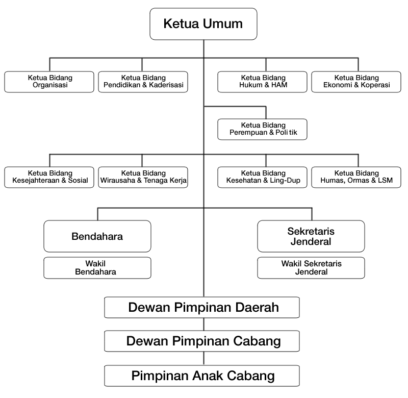

Majelis Permusyawaratan Pusat (Pengawas)Ketua Anggota Anggota
Ketua Umum
Sekretaris Jenderal Wakil Sekjen 1 Wakil Sekjen 2
Bendahara Umum Wakil Bendahara 1 Wakil Bendahara 2
Ketua Bidang Organisasi Ketua Bidang Pendidikan & Kaderisasi Ketua Bidang Perempuan & Politik Ketua Bidang Hukum & HAM Ketua Bidang Ekonomi & Koperasi Ketua Bidang Kesejahteraan & Sosial Wakil Ketua Bidang Kesejahteraan & Sosial Ketua Bidang Wirausaha & Tenaga Kerja Ketua Bidang Kesehatan & Lingkungan Hidup Wakil Ketua Bidang Kesehatan & Lingkungan Hidup Ketua Bidang Humas, Ormas & LSM |
: Hj. Fatimah Achmad, S.H. : Citraningsih Hadiningrat : Sudjatmi Djafar
: Hj. Rosa Muhammad, BSc, S.Pd.
: Endang Rarasati SE, M.B.A. : Amaelia F Salim, M.Psi. : Lenny Tri Redjeki Soejoedi
: Heny Sanusi : Titi Nuryati S.Pd I : Deden Kurniaty
: Ir. Anggarini Purnami, M.M. : Widyastuti, A.md : Ishana Adriana Dwijayanti, M.M. : Lasmidara, SH : dra. Rahayu Handonowati, M.I.Kom. : Eva Irianti, B.A. : Hj. Yulian H. Dewi Safitri, S.Ip. : Jurmaini : dr. Mien Endro : Supriati Supangat, S.Kep : Yulinda |